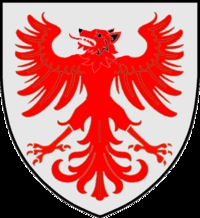

Antavla
12019332 Strange I Andersen Ulfeldt
Marsk.

Mor:
Cecilie Esbernsdatter Hvide av Terløse (<1181 - 1259)
Född:
omkring 1140 Danmark.
[1]
Död:
efter 1186 Danmark.
[1]
Barn med
12019333 Gro Knutsdatter (<1155 - >1180)
Barn:
Peder Strangesen Ulfeldt till Kalundborg (1170 - <1241)
Personhistoria
Årtal
Ålder
Händelse
1140?
Födelse omkring 1140 Danmark
[1]
1170
Sonen
6009666 Peder Strangesen Ulfeldt till Kalundborg
föds 1170 Kalundborg, Själland, Danmark
>1180
Partnern
12019333 Gro Knutsdatter
dör efter 1180
>1186
Död efter 1186 Danmark
[1]
Källor
[1]
Lindevang-lolland